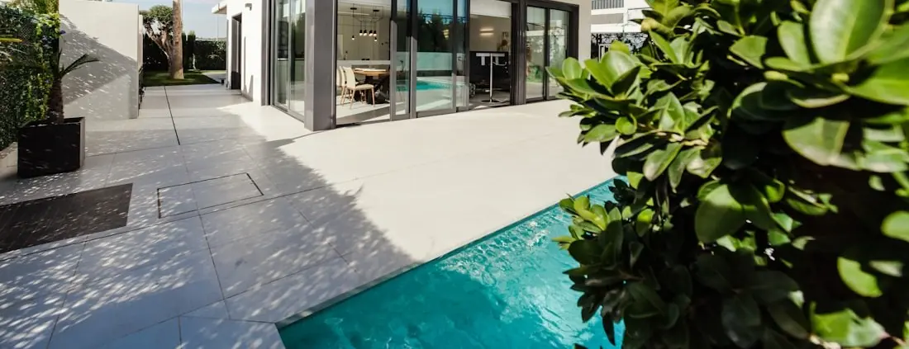
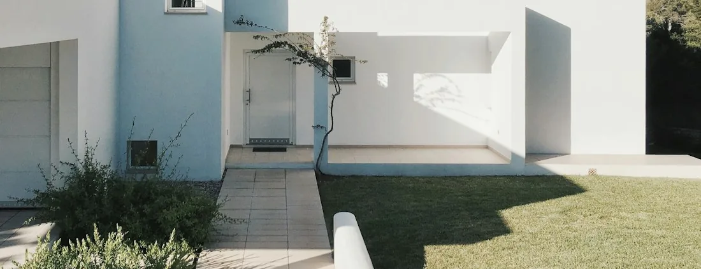

Central Broward
Outdoor Remodeling Contractor in Plantation, FL
Established lots, an established canopy, and yards where almost everything is a replacement rather than a first build.
In an established city, the job starts with demolition
Plantation is one of central Broward's older cities. A great deal of its housing stock dates from the middle of the last century onward, the lots in many neighbourhoods are more generous than newer developments manage, and the tree canopy is a genuine part of the city's character rather than a landscaping afterthought. The western side of the city includes larger acreage properties; closer in, the neighbourhoods are mature and tightly planted.
All of which means projects here look different from projects in a city built in the 1990s. Very little of the work is a first build. The driveway is not missing, it is cracked. The pool deck is not absent, it has been patched twice. The paving has not failed on its own, something under it moved. Roughly speaking, the interesting question on a Plantation property is never "what shall we put here" — it is "what is under the thing that is here now, and why did it fail".
That reverses the usual order of a consultation. On these lots the assessment of existing conditions is the design work, and the material choice is the easy part at the end.
Existing conditions
Reading what is already in the ground
Five things worth establishing on an older property before anyone talks about materials.
Why the surface failed
Cracking, settlement and lifting each have different causes, and each points at a different fix. A surface replaced without answering this question inherits the problem and fails the same way, usually faster.
What is underneath
Older driveways and decks were built to the standards of their day, over ground that has had decades to move. The sub-grade is exposed and assessed during a replacement rather than assumed to be reusable.
How many times it has been altered
Most houses of this age have been changed at least once. Finding out what was done previously, and how well, is part of the survey — including whether it was permitted, because that is far better discovered now than at an inspection.
Where the water goes
Grades that worked when a house was built may not now, especially where planting and paving have been added since. Standing water after a storm is a ground condition to resolve, not something to lay a new surface across.
What the roots are doing
The mature canopy that makes these neighbourhoods pleasant is also what lifted the path. Where roots run determines where paving can sensibly go and what kind of surface makes sense over them.
What the openings are
Houses of this era frequently still have their original windows and sliding doors. That is a separate project from the yard, but it is worth knowing about while planning access and disruption.
The local variable
Designing a yard around mature trees
Roots come first, because they were here first
A mature root plate spreads much further than the canopy suggests, and it is the single most common reason older paving lifts. Where roots run decides where paving can sensibly go, whether an edge should curve instead of running straight, and where a surface is better off stopping short.
Unit paving is more forgiving than a slab
Where movement is likely, a surface made of individual units has a real practical advantage: an affected area can be lifted, re-based and relaid with the same materials. A poured slab in the same position cracks and stays cracked. It is one of the more compelling arguments for pavers on a heavily planted lot.
Shade changes what grows and what is comfortable
Under a canopy, sod is often in a losing fight it has already lost twice. That is exactly the ground artificial turf is good at — with the caveat that leaf drop means real housekeeping, since debris left in the pile breaks down into the organic material the base was cleared of. Shade also makes paved areas considerably more pleasant underfoot than they are in open sun.
Tree work is not our trade
Removal and major root work are a specialty of their own and are regulated in many municipalities, so what is permissible depends on the tree, the property and the authority governing it. We design around what is there. Where a tree genuinely conflicts with something you want, that is a conversation with a specialist and with the city, not a decision made by a paving contractor with a saw.

Available in Plantation
The work these properties usually need
Everything we build is available everywhere we work. On established lots, this is where it lands.
Driveway replacement
The most common single project on an older property, and a groundwork job before it is a paving one. Exposing the sub-grade is what turns a resurfacing into a driveway that lasts.
Pool deck rebuilds and overlays
Overlay where the slab is sound and the added height works at the coping and thresholds; rebuild where the ground beneath it has moved. Decided by inspection, not by preference.
Paver installation and relaying
New surfaces built on a proper base, and existing paved areas lifted, re-based and relaid where movement has been localised.
Patios
Often replacing a slab that was poured decades ago to a size nobody would choose now. Sizing around actual use is the whole exercise.
Artificial turf
For the shaded ground where sod has been replaced and lost more than once, and for side yards that never dry out.
Impact windows & doors
Older housing stock frequently still has original openings. Envelope work rather than yard work, with its own permitting, and considerably less disruptive done alongside outdoor work than a year later.
Complete transformation
Replacing several things at once
On an established property there is a strong practical argument for doing the replacements together rather than one a year, and it is not about design coherence — though that follows. It is that these projects share their expensive parts.
The machinery is already on site. The access route is already opened and protected. The sub-grade is already exposed, so drainage that has never worked properly can be corrected while the ground is open instead of being disturbed again in three years. If the openings are also being replaced, the paving outside them has not been laid yet, which means nothing finished gets protected, worked over and touched up afterwards.
The sequence is the same discipline as anywhere: levels and drainage, then buried work, then footings, then surfaces, then boundary and finishing. What changes on an older lot is the front of it — a proper survey of what is there, and a written scope that says what happens if what is found underneath differs from what was expected. A proposal for replacement work that is silent on that point is a proposal worth questioning.
Design for the climate
Sun, storms and a canopy overhead
Shade you already have
An established canopy does for comfort what a structure has to be built to achieve elsewhere. Where it falls through the day is worth mapping before deciding which parts of the yard get paved and which get planted.
Debris is constant
Leaf and fruit drop affect every surface here — paving joints, turf pile, drainage runs. It is the main reason a yard under trees needs more housekeeping than a photograph suggests.
Rain arrives fast
Summer storms deliver a lot of water quickly, and grades that coped when the house was built may not now. Correcting them is part of a replacement, not an extra.
Humidity works on shaded surfaces
Damp shade encourages growth on paving, which is a traction question as much as an appearance one. Cleaning shaded routes matters more than cleaning sunny ones.
Storm season and trees together
What sits under a canopy, and what is anchored down, are worth thinking about in the design rather than in September.
Nothing paved stays cool
Lighter colours help at the margins and shade helps far more — which, on these lots, you may already have.
How it runs
Survey first, then specify
-
Assess what exists
The condition of each surface, how it is failing, where roots run, where water goes, and what previous alterations have been made. This is the long part of a consultation on an older property, and it is where the scope comes from.
-
Diagnose before designing
Why the driveway lifted, whether the deck slab is stable, whether a localised repair is genuinely viable. Materials are chosen after these answers, not before.
-
Confirm requirements for the address
What the municipality requires for this scope, and — on an older property — whether previous work was permitted, since that occasionally changes what is straightforward.
-
Written scope, including the unknowns
What is included, what is being removed, and what happens if the ground underneath turns out to be worse than expected. Replacement work has genuine unknowns and they belong in writing.
-
Remove, correct, rebuild
Break out, expose and assess the sub-grade, correct grades and drainage while the ground is open, then build up: base, bedding, surface, edge restraint, jointing.
-
Clean down and walk it
Site cleared, surfaces washed down, and a walkthrough covering what was found, what was corrected and how to look after the finished materials in a shaded yard.
Examples
Finished surfaces of the kind described here



About these photographs
They illustrate the type of finished work this page describes. They are not presented as completed projects, and none of them is claimed to have been photographed in Plantation.
Nearby
Markets around Plantation
Common questions
Questions from Plantation homeowners
My driveway has lifted where a tree root runs under it. Can that be repaired?
A localised repair is sometimes possible, but it is worth being clear about what a repair does: it resets the surface without addressing the root that moved it, so the same area tends to move again. Where a driveway is paved, individual units can be lifted, the affected area re-based and the same units relaid, which is a genuine advantage of a unit-paved surface over a slab. Whether that is the right answer, or whether the drive has reached the end of its life, is established by looking at how widespread the movement is and where the roots actually run.
Will you have to take my tree out?
Not as a matter of course, and not as our decision to make. Tree removal and major root work are a separate specialty from ours, and in many municipalities they are regulated — what is allowed depends on the tree and the property, and would need confirming with the authority that governs it. Our starting position is to design around what is there: adjusting the extent of paving, changing where an edge falls, or accepting a route that curves rather than one that runs straight through a root plate. A mature canopy is usually the best thing about an established yard.
Does artificial turf work under heavy shade and leaf drop?
Deep shade is one of the strongest cases for turf, because it is exactly where sod keeps failing and being replaced. Leaf drop is the other half of the equation and it is worth going in with your eyes open: debris left sitting in the pile breaks down into the organic material the base was cleared of, so a yard under a heavy canopy needs clearing more often than an open one. It is housekeeping rather than gardening, but it is not nothing.
My house is from the 1970s. What usually needs attention outside?
In our experience of houses of that era the recurring list is the original driveway, a pool deck that has been patched more than once, paving that has moved where roots or settlement got under it, and the openings — many houses of that age still have their original windows and sliding doors. What matters more than the list is that nearly all of it is replacement work, so the assessment is about what is underneath: the sub-grade under the drive, whether the deck slab is stable, and how the existing units are fitted at each opening.
Is an old concrete pool deck worth overlaying?
It depends entirely on why it looks the way it does. A slab that is sound, stable and simply dated can take an overlay, provided the added height still works at the coping, the door thresholds and any enclosure. A slab that is cracked because the ground beneath it moved — or because a root is under it — will pass that movement straight into whatever is laid on top, and the new surface will eventually show it. On an older Plantation property the second case is common enough that we assess it before proposing either.
Do you handle permitting in Plantation?
We handle the permitting process for the work we carry out and confirm the requirements that apply to your address as part of the project. Requirements are set by the municipality and the county and differ between neighbouring cities, so we do not publish them here. On older properties there is a second reason to confirm early: what was built previously was not always permitted, and finding that out at the planning stage is considerably better than finding out during an inspection.
Start with what failed, not with a catalogue
A free on-site visit in Plantation, an honest diagnosis of why the existing surface is doing what it is doing, and a written scope that says what happens if the ground underneath surprises us.